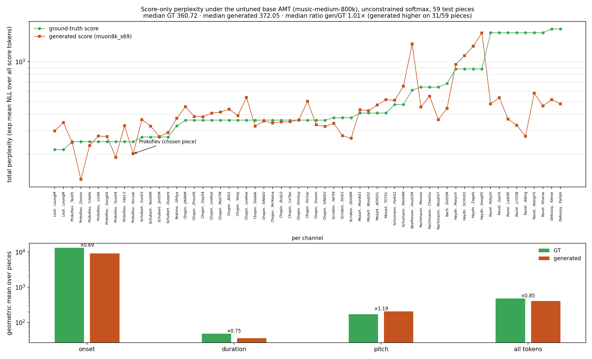
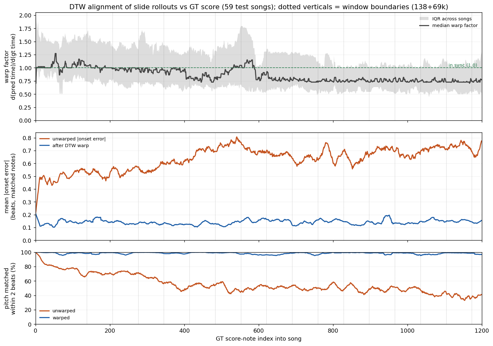
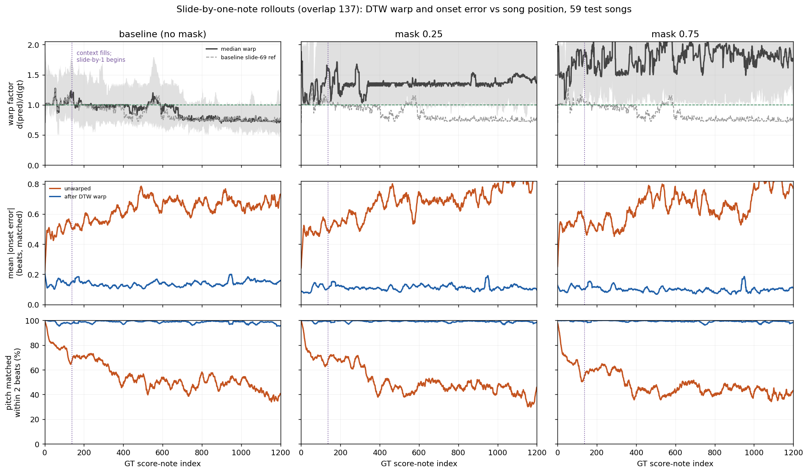

Performancethe input the model conditions on (performance time, same px/s) — aligned to a score note ·
no aligned score note (dropped from training windows, still fed as a control) · hover/click a note for generated note i's logits; click pins
Ours
Beyer & DaiMIDI2ScoreTransformer (ISMIR 2024)
Zeng+joint-apt-epr (ICLR 2026)
Score perplexity under the untuned base AMT
score-only tokens (no performance controls) scored by stanford-crfm/music-medium-800k in strided 341-note windows; per-note NLL, raw (faint) and Gaussian-smoothed (bold); x = note index of each sequence
DTW vs GT
warp factor d(pred)/d(gt) — 1.0 = clock in sync; error curves in beats (right scale)
Test-set aggregates (59 songs): score perplexity under the untuned base AMT (generated vs GT, best no-DAgger lane, slide-69); then DTW drift for overlap-69 slide and the slide-by-one comparison.



Same drawing conventions as the windowed visualizer: green outlines are the ground-truth score, orange bars the system's predicted score, 0.5 s beat grid with a heavier line every 2 s, one row per semitone with C labels. Each system is re-anchored to its own first onset (whole-song eval convention). scale-normalize multiplies a system's clock by its per-song scale-max argmax ratio (the panel label shows the factor; the metrics table shows it for the scale-max families) — the view the scale-max / IOI scale-max scores are computed on. Hover OUR notes
for decode-time perplexity, entropy and top-5 alternatives per channel (trace lanes only); the PERFORMANCE panel maps performance note i to generated note i
(one score note per control) and paints in red the performance notes the tokenizer's aligner could not match to any score note. Click a note to pin its tooltip (Esc/click to release). Deep-link with
#<split/perf>. Boundary geometry: slide-69 re-packs every 69 notes after 138; slide-by-1 every note; reset = disjoint windows.